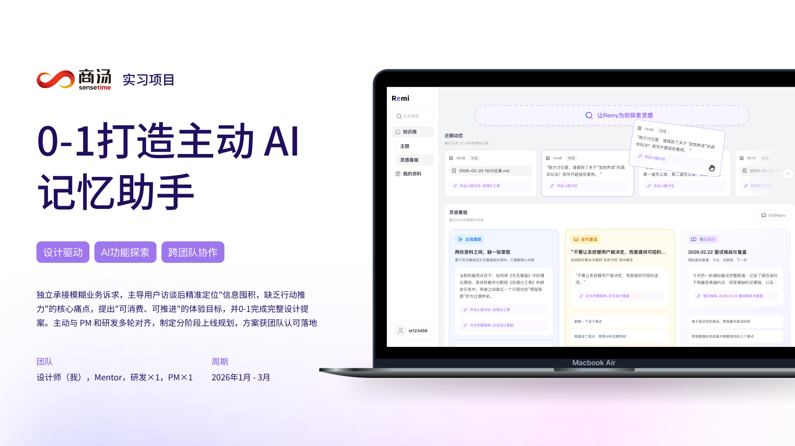

教育背景
西南交通大学产品设计/本科
2023.09-2027.06
2023.09-2027.06
PORTFOLIO / 2025-2026
推动 AI 产品从 0 到 1 的全流程设计，解决主动式 AI 交付物“理解门槛高，用不上”问题，降低用户认知负担
SELECTED WORKS / DIRECTORY
SENSETIME · INTERNSHIP PROJECT
 02 / 2025
02 / 2025PERSONAL PROJECT · 2025.09-11
 03 / 2025
03 / 2025PERSONAL PROJECT · 2025.11-12
CNAP · CLOUD WORKLOAD
云原生INTERACTION DEMO · 2026
